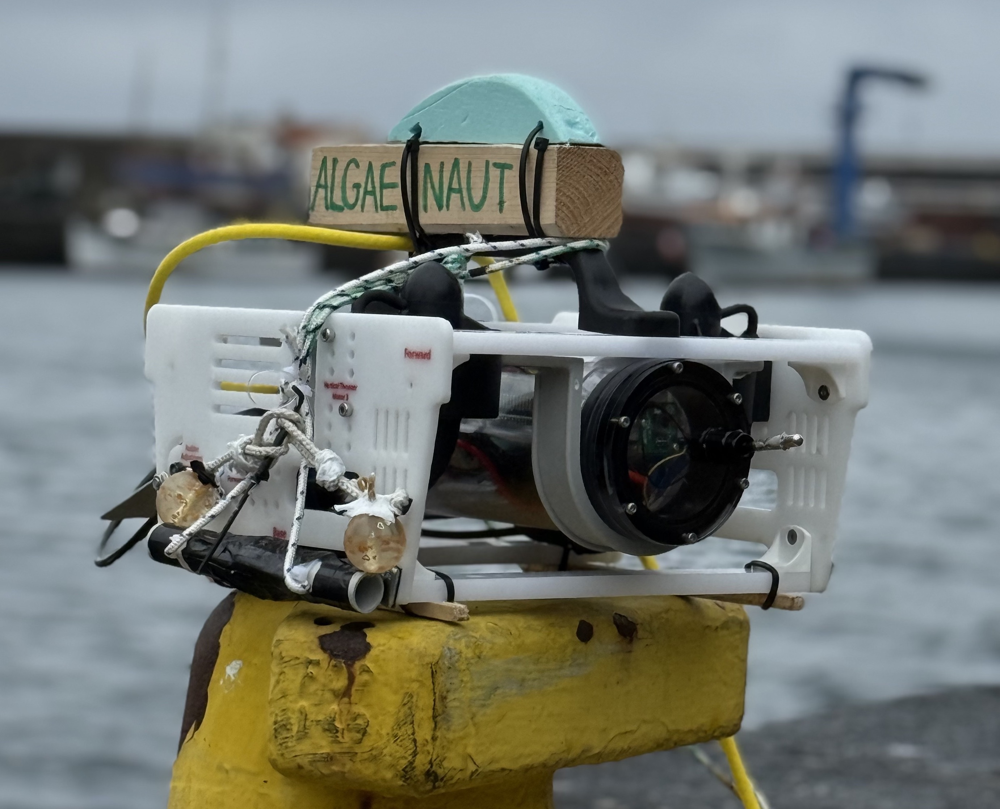
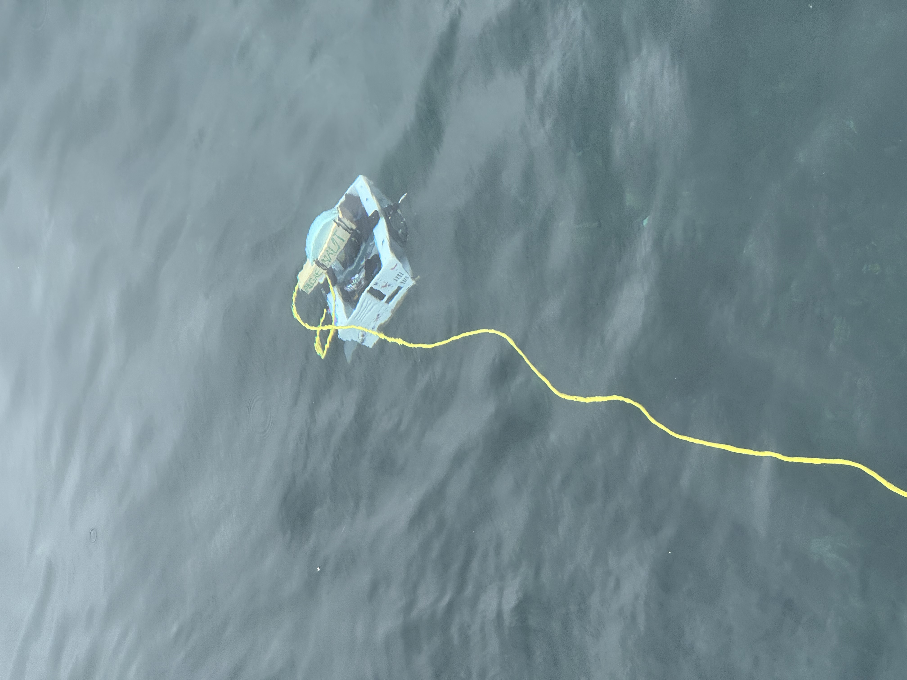
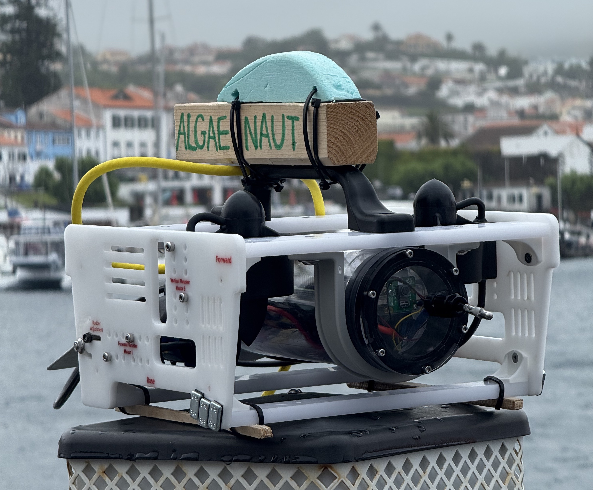
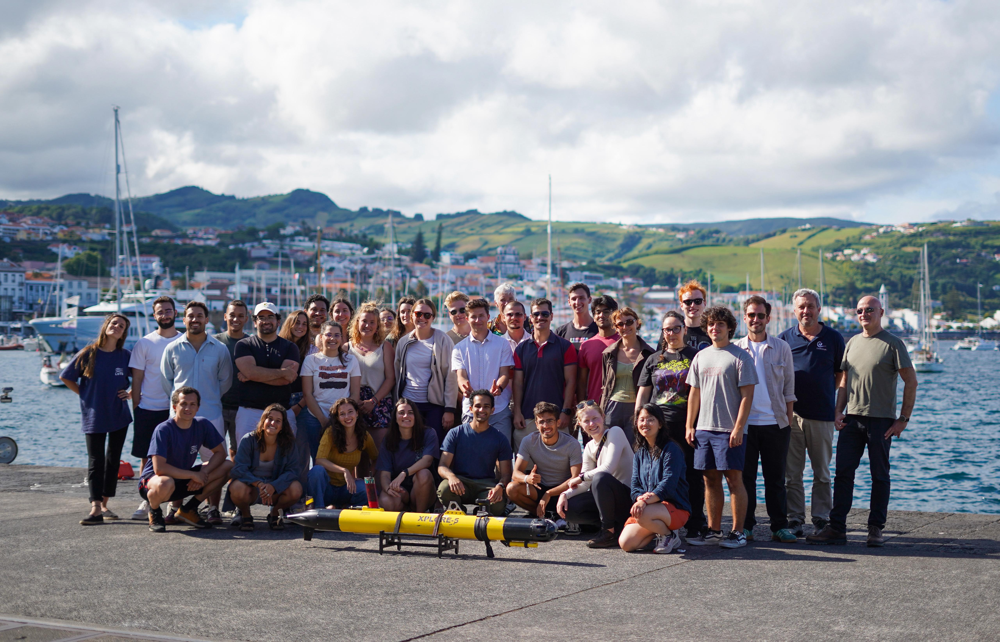
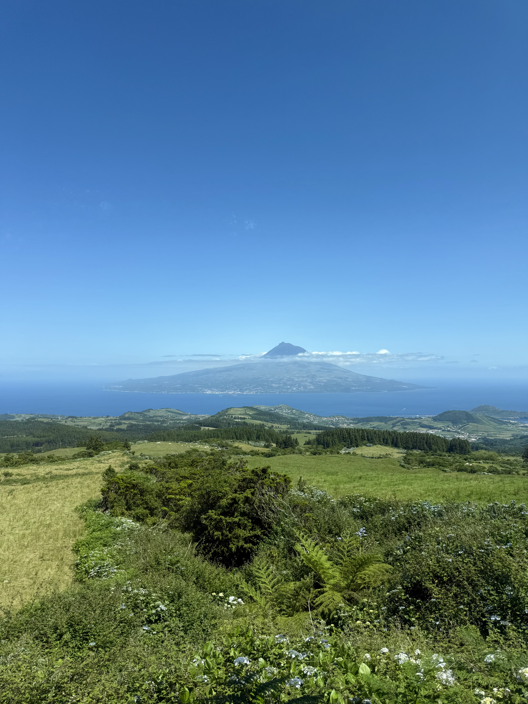
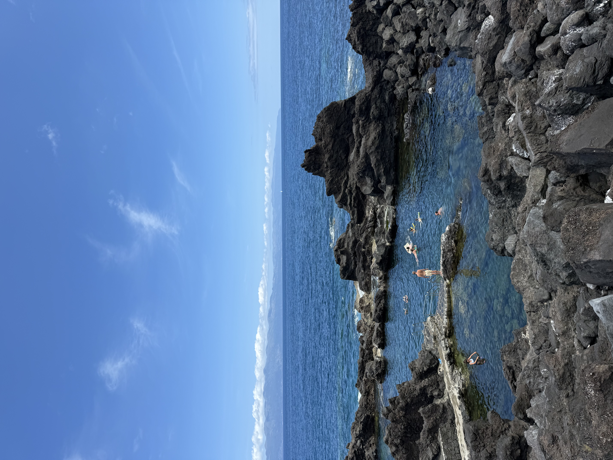
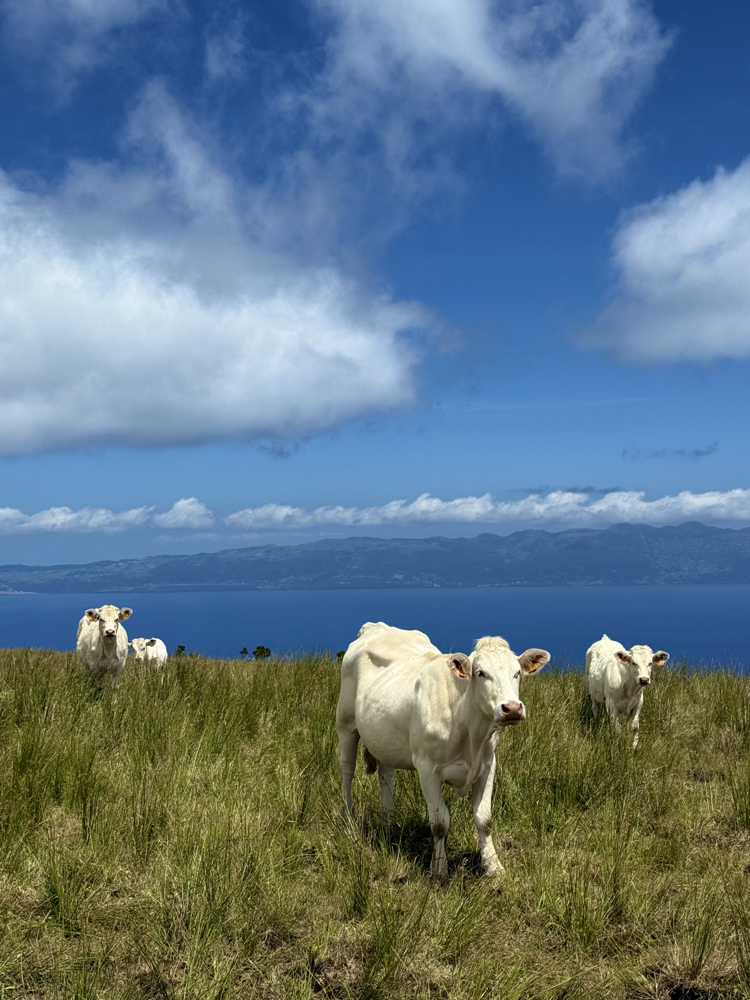

Selected as 1 of 12 MIT post-graduate students for the MIT Portugal Marine Robotics Summer School (MRSS) held in the Azores islands (off the coast of Portugal).
This intensive program combined theoretical lectures with hands-on fieldwork, focusing on marine robotics, oceanography, and ecosystem monitoring.
MRSS brought together students, professors, field experts, and the local community to address environmental challenges through robotics and ocean technology.

The Azores islands face a growing problem with invasive algae species that threaten local marine ecosystems.
Our team decided to design and operate an ROV capable of tracking and documenting invasive algae populations around Faial Island, providing important data for conservation efforts.

Successfully deployed and operated the ROV in multiple locations around Faial Island, collecting valuable data on invasive algae distribution. The project proved the feasibility of using affordable, custom built ROV systems for environmental monitoring in remote locations.
ROV Capabilities:


A highlight of the MRSS program was spending time in a very beautiful and unique place – the Azores. These islands off the coast of Portugal are in the middle of the Atlantic and are home to more cows than people.


